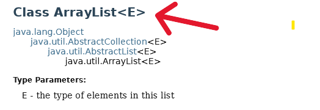
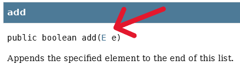

Java Collections
DI Reinhold Buchinger
Creative Commons-Lizenz CC BY-NC-SA 4.0 AT.
Ziele
Java Collections verstehen. List und Set anwenden können.
Datenstrukturen
Welche Datenstruktur kennen wir bis jetzt, um mehrere Objekte gemeinsam zu speichern?
Array
Nachteile Array
- hat eine fixe Länge (in Java)
- stellt selbst keine Methoden für häufige Anwendungsfälle zu Verfügung
- z.B. Sortierung, Suche,...
- ...
Java Collection
- Als "Collection" bezeichnet man eine Gruppe von zusammengehörigen Objekten.
- Es gibt (neben Arrays) verschiede Datenstrukturen, die mehrere Objekte speichern:
- List: definierte Reihenfolge, Duplikate erlaubt
- Set: keine Duplikate erlaubt
- Map: Schlüssel-Wert-Paare
- Java stellt verschiedene Interfaces und konkrete Implementierungen (Klassen) für die unterschiedlichen Datenstrukturen bereit.
List
Eine Liste ist eine Datenstruktur ...
- deren Elemente immer eine Ordnung haben (z.B. Reihenfolge des Einfügens).
- bei der Duplikate erlaubt sind.
- bei der über einen Index auf Elemente zugegriffen werden kann.
Die Java API kennt u.a folgende Implementierungen einer Liste:
- ArrayList (bessere Performance Speicherung/Zugriff)
- LinkedList (bessere Performance bei Manipulationen)
- Vector (synchronized - nur ein Thread gleichzeitig)
- Stack (LIFO – last-in-first-out)
Set
Ein Set ist eine Datenstruktur....
- die keine Duplikate erlaubt.
- nicht unbedingt eine Ordnung haben muss.
Die Java API kennt drei konkrete Implementierungen eines Sets:
Map
Eine Map ist eine Datenstruktur...
- die Schlüssel (keys) zu Werten (values) zuordnet
z.B. Name (key) zu Telefonnummer (value)
- bei der alle Schlüssel eindeutig sein müssen
Die Java API kennt drei konkrete Implementierungen einer Map (vgl. Sets!):
Generics
- Eine Collection (z.B. ArrayList) ist so implementiert, dass ein beliebiger Datentyp darin gespeichert werden kann.
- Im Code wird aber angegeben, welchen Datentyp man in der Collection speichern will.
- Erlaubt eine Überprüfung bereits vom Compiler / IDE, ob nur Objekte vom gewünschten Datentyp eingefügt werden.
- So werden diese Fehler nicht erst bei der Programmausführung erkannt.
- <> kennzeichnen in Java Generics.
Generics - Beispiel
- Die Variable
list hat den Datentyp ArrayList.
- <String> kennzeichnen den Datentyp mit dem die Klasse arbeiten soll. In dieser Arraylist können also nur Strings gespeichert werden.
- Auf der rechten Seiten reichen leere <> aus, da der Compiler den Datentyp aus dem linken Teil ableiten kann.
ArrayList<String> list = new ArrayList<>();
Generics - Java API
- In der Java API Dokumentation steht ein Buchstabe als Platzhalter für den generischen Datentyp.
- Für eine Arraylist von Strings wäre E also String.


Interface
Wiederholung: Was ist ein Interface?
- Ein Interface besitzt grundsätzlich keine Implementierungen, sondern nur Methodenköpfe und Konstanten.
- Trennt die Definition der Schnittstelle von der Implementierung.
public interface RidableAnimal { //Interface definiert die Schnittstelle ("Was")
public void rideAnimal();
}
public class Horse implements RidableAnimal {
@Override
public void rideAnimal() { //die Klasse implementiert die Schnittstelle ("Wie")
System.out.println("Riding is fun");
}
}
relevante Interfaces in der Java API
- Collection ist ein Interface der Java API
- definiert die grundlegenden Methoden für Collection-Typen
- List und Set sind ebenfalls Interfaces und erben von Collection
- Besitzen alle Methoden von Collection und definieren zusätzliche Methoden.
- Map ist ebenfalls ein Interface der Java API (erbt aber nicht vom Interface Collection).
Interfaces & Klassen - Beispiel
- Die Klasse ArrayList (als Beispiel) ist eine konkrete Implementierung des Interfaces List.
- Implementiert alle Methoden des Interfaces (und noch ein paar zusätzliche).
- Es kann ein Objekt von der Klasse ArrayList erstellt werden (von einem Interface kann kein Objekt erstellt werden).
- LinkedList, Stack,...sind weitere Implementierungen des Interfaces List.
Interfaces & Klassen - Beispiel
? list = new ArrayList<>();
Welchen Datentyp kann die Variable list haben?
Welcher Datentyp soll verwendet werden und warum?
Collection, List, ArrayList sind mögliche Datentypen für die Variable list.
Es wird empfohlen, den Datentyp List zu verwenden, da dies die Flexibilität erhöht und die Implementierung von ArrayList abstrahiert.
Interfaces & Klassen – Beispiel 2
Collection<String> c = new ArrayList<>();
c.add("Saturn"); // the method add is defined in the interface "Collection"
c.get(0); // Error: no method "get"
List<String> l = (List) c; // cast to list
String s = l.get(0); // the interface "List" has a method "get"
l.ensureCapacity(20); // Error: no method "ensureCapacity"
ArrayList<String> al = (ArrayList) l; // cast
al.ensureCapacity(20); // the class "ArrayList" has the method "ensureCapacity"
Primitive Datentypen vs. Objekte
- In einer Collection können nur Objekte gespeichert werden.
- Trotzdem läuft der Code wenn primitive Typen (int, float, boolean,...) in Collection gespeichert werden. Warum?
- "Auto(un)boxing": Java nimmt eine automatische Umwandlung primitiver Typ <-> Objekt vor.
- Jeder primitive Datentyp besitzt in Java ein dazugehörige "Wrapper"-Klasse. Sie "verpacken" (engl. "wrap") einen primitiven Datentyp.
Wrapper Klassen
| Primitiver Datentyp |
Wrapper-Klasse |
| byte |
Byte |
| short |
Short |
| int |
Integer |
| long |
Long |
| float |
Float |
| double |
Double |
| char |
Character |
| boolean |
Boolean |
Conversion Konstruktor
- Jede Collection Implementierung besitzt einen Konstruktor mit einem Parameter vom Typ Collection.
- Dieser Konstruktor initialisiert die neue Collection mit allen Elementen der übergegebenen Collection.
- Welche Objekte kann ich einem solchen Konstruktor übergeben?
Beispiel:
ArrayList<String> list = new ArrayList<>();
list.add("Semmel");
list.add("Semmel");
HashSet<String> set = new HashSet<>(list);
Array <-> Collection
Umwandlung Collection in Array
Umwandlung Array in Collection
String[] names = new String[]{"Paul", "Hannah", "Anna"};
List<String> list = Arrays.asList(names);
Set<Integer> set = new HashSet<>(Arrays.asList(1, 2, 3));
String[] namesArray = (String[]) set.toArray();
List.of & Set.of
List.of() und Set.of() sind Factory-Methoden, um schnell unveränderliche Listen und Sets zu erstellen.- Die erzeugten Collections sind immutable (unveränderlich): Nachträgliches Hinzufügen, Entfernen oder Ändern ist nicht möglich.
List<String> namen = List.of("Paul", "Hannah", "Anna");
Set<Integer> zahlen = Set.of(1, 2, 3);
namen.set(0,"Max"); //UnsupportedOperationException
zahlen.add(4); //UnsupportedOperationException
- Es lässt sich jedoch leicht eine veränderliche Kopie erstellen.
- Auch gut geeignet, um Collections mit festen Werten zu initialisieren.
List<String> namen = new ArrayList<>(List.of("Paul", "Hannah", "Anna"));
namen.add("Max");
for-Schleife
Sinnvoll bei Listen und wenn der Index benötigt wird.
List<String> myList = new ArrayList<>(List.of("Paul", "Hannah", "Anna"));
for (int i = 0; i < myList.size(); i++) {
System.out.println(myList.get(i));
}
for-each Schleife
Collection<String> collection = new HashSet<>(List.of("Paul", "Hannah", "Anna"));
for (String s: collection) {
System.out.println(s);
}
Iterator
Ein Iterator muss verwendet werden wenn man Elemente während des Durchlaufs entfernen möchte.
Collection<String> collection = new HashSet<>(Arrays.asList("Paul", "Hannah", "Anna"));
Iterator<String> it = collection.iterator();
while (it.hasNext()) {
String nextElement = it.next();
if (nextElement.equals("Hannah")) {
it.remove(); //über Iterator entfernen
}
}
System.out.println(collection); //[Paul, Anna]
Streams
Behandeln wir später.
Vergiss nicht, dir die Codebeispiele anzusehen!
Zusammenfassung
- Java Collections sind Datenstrukturen, die mehrere Objekte speichern können.
- Die Java API stellt verschiedene Interfaces und konkrete Implementierungen für Collections bereit.
- Wir haben List, Set und Map und deren Eigenschaften kennengelernt.
- Generics ermöglichen die Angabe des Datentyps, der in einer Collection gespeichert werden soll.
Fragen? Anregungen? Bemerkungen?